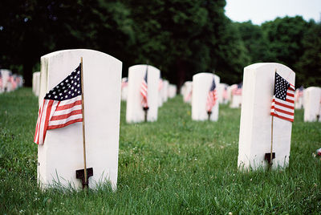

Memorial Day is also known as decoration day. It was originally a day where people remembered and commemorated those who died while fighting in the Civil War. Today, people celebrate memorial day by honoring those who died while fighting for our country.

Memorial Day is celebrated on the last Monday of May. This year it will be held on May 25th.
Memorial Day is celebrated to honor and remember those who died while serving in the U.S military. People wanted to give people a day to remember those who fought for our country.
Memorial Day is celebrated by going to memorials or cemeteries and paying respect to those who died. Many people have barbecues or picnics too.
Memorial Day is celebrated throughout the U.S. Almost every U.S citizen celebrates Memorial Day.
Things to do to Celebrate |
Foods to eat |
| Barbecue | Chicken |
| Picnic | Sandwiches |
| Go to a memorial sight | Watermelon |
| Go to a cemetery | Hot dogs |
| Have your neighbours over | Hamburgers |
Sam Wheelock
*Click here to go to my final